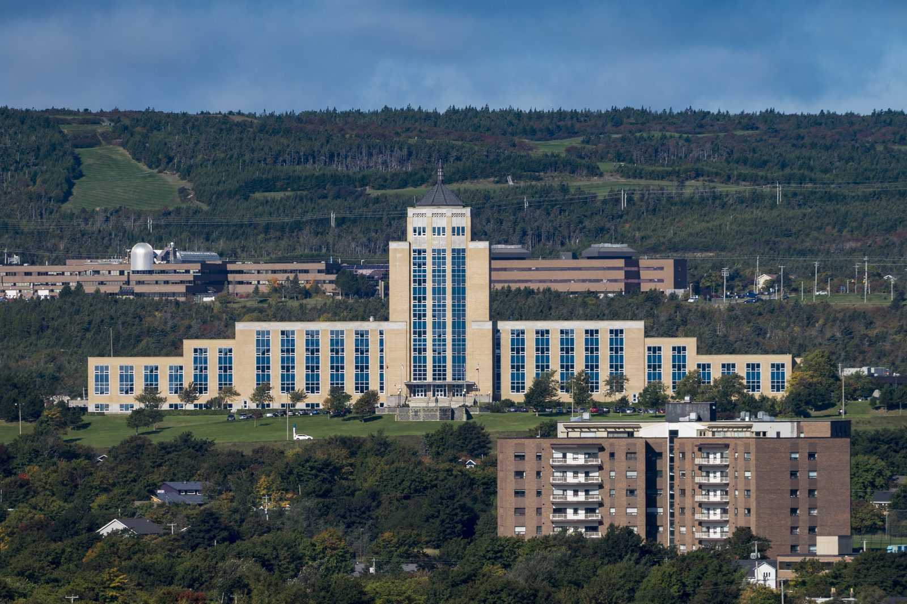
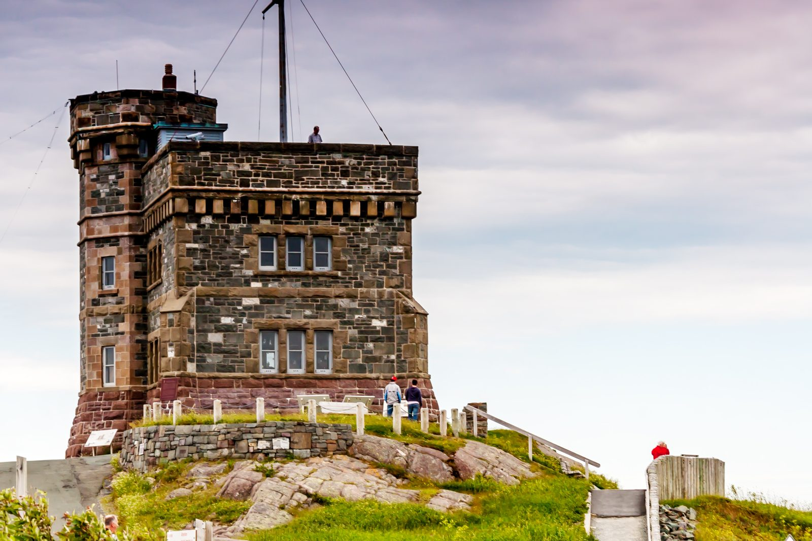

Choose a province to see its latest election results.
October 14, 2025 · 40 seats · Majority: 21 seats. The Progressive Conservatives took 21 of 40 seats.
Majority: 21 seats.
Total votes recorded: 199,565.
Tap a district on the map, or pick one below, to see all its candidates. Districts are coloured by the winning party.
Pick a district to see all its candidates.
Coloured by the winning party — tap a tile to jump to its full result.
No districts match your search.


381,818 electors; 52.3% turnout. Note: seats shown are the election-night allocation.
District figures: the candidate votes above sum to 199,560 valid votes, 5 fewer than the published total of 199,565 — the official report’s district totals and the government’s results release differ slightly by tabulation. The figures on this page follow the official report; the published total above is unchanged.
Source: Elections NL, 2025 General Election Report — elections.gov.nl.ca